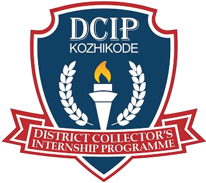

Restoring dignity, enabling lives
Welfare homes should be places of growth, connection and care.
Happy Hill is the welfare home initiative of DCIP Kozhikode. It works with the people who live in government welfare homes across the district to restore dignity, build belonging and close the distance between what these homes are and what they should be.
In association with

About the project
The idea behind the name
A welfare home is rarely associated with happiness. Happy Hill is an intention: that these spaces should be places of growth, stimulation, connection and care, and not merely institutional management.
The project is implemented by DCIP Kozhikode together with the Social Justice Department (SJD) and the Department of Women and Child Development (WCD), which run the welfare homes in the programme.
Its work is to help close the distance between what these homes are, and what they should be, for the people who live in them.
“
That is the guiding principle behind everything Happy Hill does.
The challenge
Social isolation
Why they persist
Our goal
Our approach
From need to partnership
A structured model in which every welfare home is paired with a partner college.
Purpose of the MoU
Mobilising resources
What we address
Six areas of work
Our reach
The welfare homes
Key milestones
Where the project stands
From the partnership model to better spaces for residents.
Looking ahead
What is coming next
Four pieces of work that will shape the next phase.
Institutions
Who makes it happen
Government departments, the District Administration and design partners.
Also on board
Colleges in collaboration
Seven partner colleges
Each college is assigned to a welfare home through an annual MoU.
Keeping partnerships active
Managing the MoU cycle
A yearly cycle keeps each partner college accountable and aligned with its home. The Happy Hill Tracker is built to support it.
Recent activities
What has been happening
In pictures
Moments from Happy Hill
A look at the people and moments behind the project.
Upcoming events
Coming up
Open to partner colleges, welfare homes and the District team.
Reports and documents
Read and download
Part of the Happy Hill team?
Coordinators, welfare home staff and the District team use the tracker to plan activities, raise and attend requests, and follow progress.